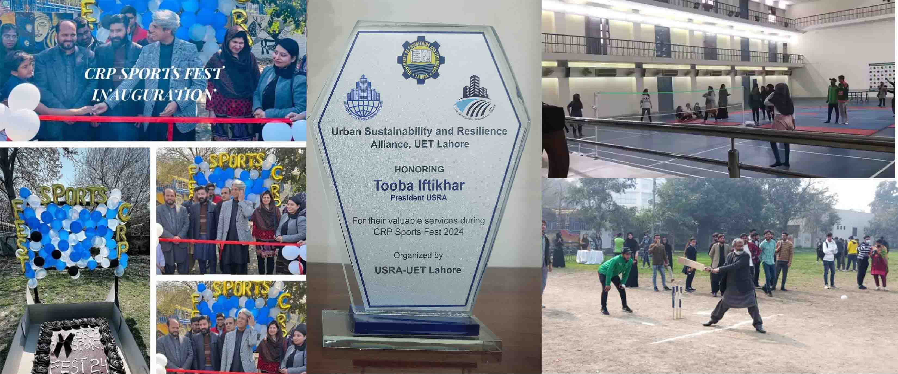

President USRA
Urban Resilience and Sustainability Alliance (USRA) is a young departmental society of UET Lahore
As the first president of the “Urban Resilience and Sustainability Alliance” from September 2023 to May 2024, I had the amazing opportunity to lead my team in organizing sports festivals, cultural events, and seminars. We even hosted international guests from Iran, Germany, and the Philippines during major conferences. It was a huge achievement for us, and we were so proud to make it happen!
Organizing Seminars
Hosting International Conferences
Arranging Sports Tournaments
Leading Cultural Events
Class Representative
Batch-2020 Department of City and Regional Planning UET, Lahore
My 4-year university journey transformed me from an average girl to a resourceful social individual. Being the representative of my class for four years straight, I organized recreational trips, managed events, resolved conflicts, and led a class of 29 through different projects. I was the go-to person for anything and everything my classmates needed.

German Summer School
Workshop at TU Dortmund and Visit to Historic Cities of Cologne, Münster, and Soest
My 10-day visit to Germany deepened my appreciation for diverse cultures. I explored historic churches, absorbing their tranquility, listening bells, lighting candles, and even began learning German on Duolingo after realizing its importance in communication.
Volunteer Activities
General Member of Ibn-e-Akram Welfare Foundation
In my free time, I actively engage in community service initiatives that make a meaningful impact. I participate in organizing food and book drives to support underprivileged communities, and I visit orphanages to provide care, encouragement, and resources to children in need. These activities allow me to give back to society, foster empathy, and contribute to creating a positive and supportive environment for those facing challenges.